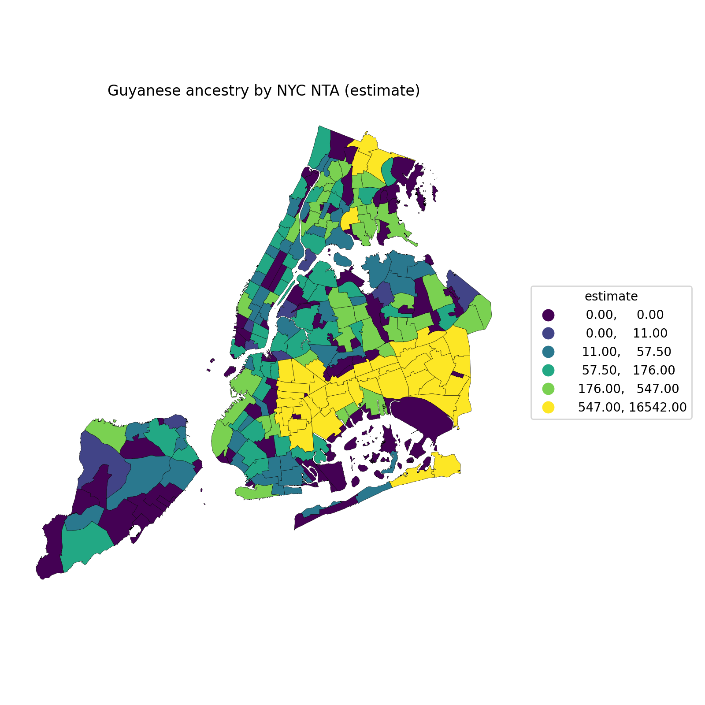
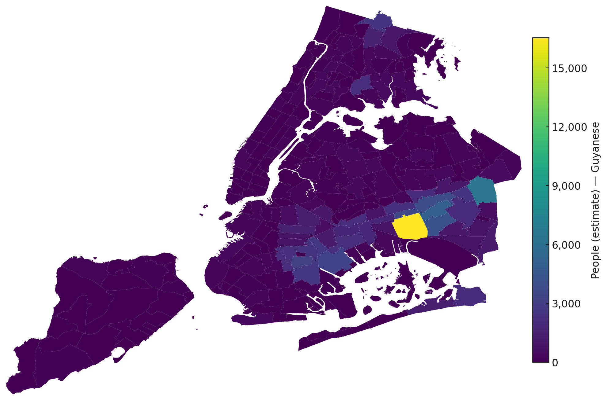
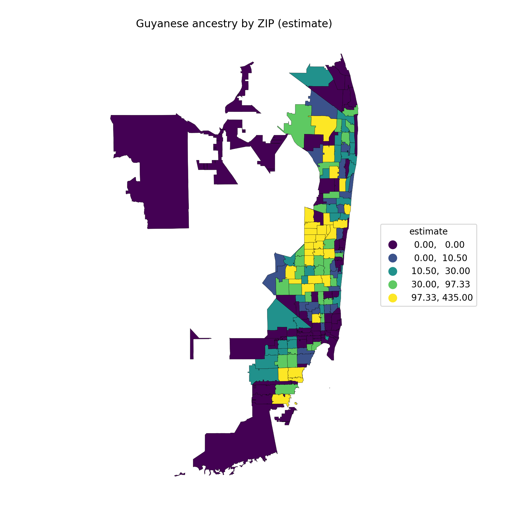

Locality & Maps
Interactive Visualizations

Source: U.S. Census Bureau, ACS 2019–2023 5-year estimates; TIGER/Line 2023 boundaries
Source: U.S. Census Bureau, ACS 2019–2023 5-year estimates; TIGER/Line 2023 boundaries
Source: U.S. Census Bureau, ACS 2019–2023 5-year estimates; TIGER/Line 2023 boundaries